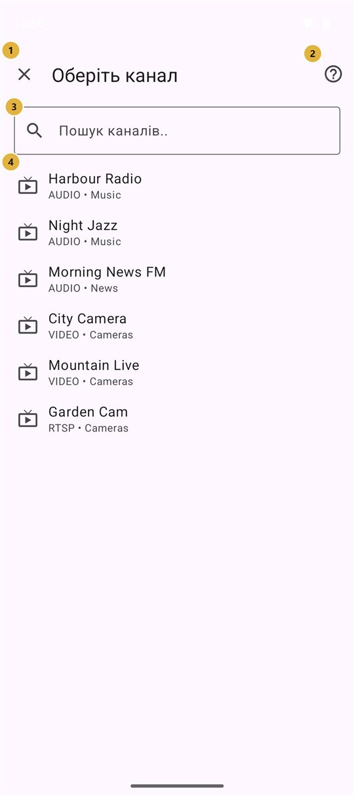
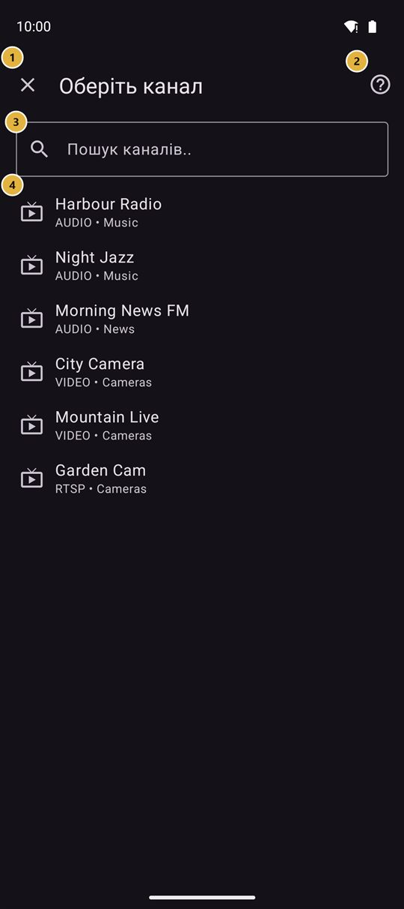

Оберіть канал
Для чого цей екран
Оберіть канал, який відкриває плитка каналу на домашньому екрані. Цей екран з'являється, коли ви додаєте плитку.


Порядок дій
- Знайдіть канал: прокрутіть список 4 або введіть частину назви в полі пошуку 3.
- Торкніться каналу. Плитка створюється одразу, а цей екран закривається.
- Передумали - вийдіть кнопкою «Закрити» 1; плитка не додасться.
Елементи
1ЗакритиВиходить, не додаючи плитку.
На домашній екран нічого не додається.
- Скасування
- Додайте плитку знову зі списку віджетів домашнього екрана.
2ДовідкаВідкриває цю сторінку.
«Назад» повертає до списку.
- Сполучення клавіш
- F1
3Пошук каналів..Звужує список під час введення.
Шукає за назвою каналу. Якщо нічого не підійшло, екран повідомляє, що канали не знайдені.
4Список каналівВаші канали.
Дотик до рядка вибирає цей канал для плитки. Потім плитка відкриває його одним дотиком на домашньому екрані.
- Скасування
- Видаліть плитку й додайте знову, щоб вибрати інший канал.